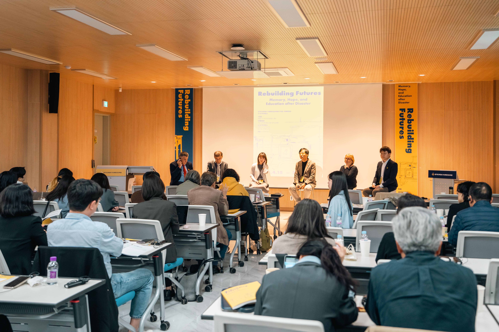
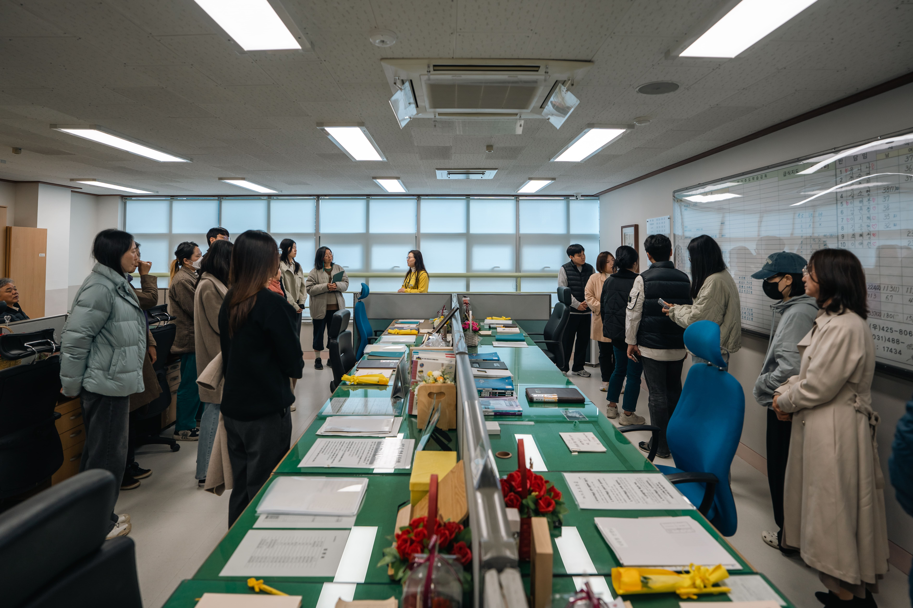
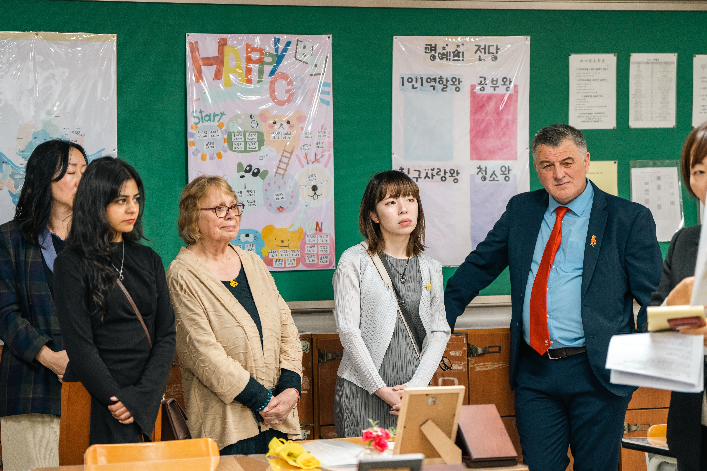

Summary
This annual international conference series brings together educators, researchers, policymakers and disaster-affected communities to share approaches to disaster memory and education. The first two conferences took place in 2025 and 2026, supporting exchange about remembrance, justice, preparedness and resilience.
2026 conference
Innovating Disaster Education for Preparedness and Resilience: From Memory to Action
The second conference took place in April 2026 in Ansan, South Korea, co-organised with the 4.16 Institute for Life and Safety Education. It extended the series’ focus towards preparedness, resilience and educational action.
The programme book will be added here.
2025 conference
The inaugural conference, held in April 2025, explored education, archiving and social justice after major disasters. Keynote speakers from the UK, Australia and South Korea contributed alongside practitioners and community members.
Read the 2025 conference programme
Objectives
- Co-create an annual space for international exchange on disaster education and memorialisation.
- Connect educators, policymakers, researchers, and disaster communities to share practices and priorities.
- Surface lessons about justice, accountability, and remembrance after disasters, and translate them into educational practice.
- Strengthen long-term partnerships between the 4.16 Institute and the University of Southampton around disaster education.
Related projects
The series builds on the disaster education research network and connects with the community-engaged work of the Grenfell Curriculum. Conference programmes are listed here as event resources.
Team
- Eunhwa Lee, 4.16 Institute for Life and Safety Education
- Jiseong Lee, 4.16 Institute for Life and Safety Education
- Wonyong Park, University of Southampton
2025 conference photographs




Use the left and right arrow keys to navigate the images.
2026 conference photographs
Use the left and right arrow keys to navigate the images.